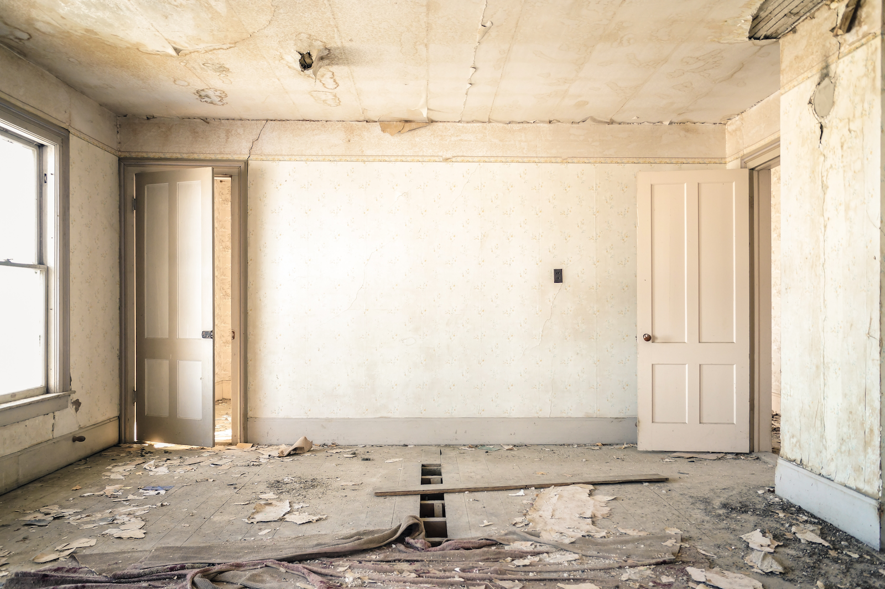

03:00
Teaching intro data science and assessing learning
Preparing to Teach 2023
Mine Çetinkaya-Rundel
About me
My teaching background
PhD at UCLA: Lots of intro stat TAing, found a passion for thinking about how people learn and how to better meet their needs
Faculty at Duke:
First 3 years: Focus on intro stat, focusing on infusing modern methods and computing into the curriculum
4th year onward (including 2 year stint at University of Edinburgh): Focus on intro data science and tool building (but still actively thinking about intro stat too…)
Principles for design
Baking a cake
Imagine you’re new to baking, and you’re in a baking class. I’m going to present two options for starting the class. Which one gives you better sense of the final product?
Baking a cake
Today we’re going to make a pineapple and coconut sandwich sponge cake with these ingredients

Baking a cake
Today we’re going to make a pineapple and coconut sandwich sponge cake with these ingredients
OK, hold on to that thought!
Design foundation 1: Backwards design
Set goals for educational curriculum before choosing instructional methods + forms of assessment
- Identify desired results
- Determine acceptable evidence
- Plan learning experiences and instruction
Designing backwards
- Identify desired data analysis results
- Determine building blocks
- Plan learning experiences and instruction
Design foundation 2: GAISE
2016 Guidelines for Assessment and Instruction in Statistics Education
- Teach statistical thinking.
Teach statistics as an investigative process of problem-solving and decision making.
Give students experience with multivariable thinking […] to answer challenging questions that require them to investigate and explore relationships among many variables.
- Focus on conceptual understanding.
- Integrate real data with a context and purpose.
- Foster active learning.
- Use technology to explore concepts and analyse data.
- Use assessments to improve and evaluate student learning.
2016 GAISE
- Teach statistical thinking.
Teach statistics as an investigative process of problem-solving and decision making.
Give students experience with multivariable thinking […] to answer challenging questions that require them to investigate and explore relationships among many variables.
- Focus on conceptual understanding.
- Integrate real data with a context and purpose.
- Foster active learning.
- Use technology to explore concepts and analyse data.
- Use assessments to improve and evaluate student learning.
NOT a commonly used subset of tests and intervals and produce them with hand calculations
2016 GAISE
- Teach statistical thinking.
Teach statistics as an investigative process of problem-solving and decision making.
Give students experience with multivariable thinking […] to answer challenging questions that require them to investigate and explore relationships among many variables.
- Focus on conceptual understanding.
- Integrate real data with a context and purpose.
- Foster active learning.
- Use technology to explore concepts and analyse data.
- Use assessments to improve and evaluate student learning.
Multivariate analysis requires the use of computing
2016 GAISE
- Teach statistical thinking.
Teach statistics as an investigative process of problem-solving and decision making.
Give students experience with multivariable thinking […] to answer challenging questions that require them to investigate and explore relationships among many variables.
- Focus on conceptual understanding.
- Integrate real data with a context and purpose.
- Foster active learning.
- Use technology to explore concepts and analyse data.
- Use assessments to improve and evaluate student learning.
NOT use technology that is only applicable in the intro course or that doesn’t follow good science principles
2016 GAISE
- Teach statistical thinking.
Teach statistics as an investigative process of problem-solving and decision making.
Give students experience with multivariable thinking […] to answer challenging questions that require them to investigate and explore relationships among many variables.
- Focus on conceptual understanding.
- Integrate real data with a context and purpose.
- Foster active learning.
- Use technology to explore concepts and analyse data.
- Use assessments to improve and evaluate student learning.
Data analysis isn’t just inference and modelling, it’s also data importing, cleaning, preparation, exploration, and visualization
Design foundation 3: PCMI Curriculum Guidelines
2017 Park City Math Institute Curriculum Guidelines for Undergraduate Programs in Data Science
Students will immediately use a high-level language to explore, visualize, and pose questions about data. In the second semester, a more algorithmic language may be introduced to help students understand the thinking and structure behind the higher-level functions they experienced in the first semester.
- Introduction to high-level language
- Exploring and manipulating data
- Functions and basic coding
- Introduction to modeling, both deterministic and stochastic
- Concepts of projects and code management
- Databases
- Introduction to data collection and statistical inference
Design foundation 3: PCMI Curriculum Guidelines
2017 Park City Math Institute Curriculum Guidelines for Undergraduate Programs in Data Science
Students will immediately use a high-level language to explore, visualize, and pose questions about data. In the second semester, a more algorithmic language may be introduced to help students understand the thinking and structure behind the higher-level functions they experienced in the first semester.
- Introduction to high-level language
- Exploring and manipulating data
- Functions and basic coding
- Introduction to modeling, both deterministic and stochastic
- Concepts of projects and code management
- Databases
- Introduction to data collection and statistical inference
So, where do we go with all this?
Discussion
Discuss in pairs:
- Which components can you see yourself (or do you already) include in an intro data science curriculum?
- Which components do you have reservations about, and why?
Which kitchen would you rather bake in?

Design principle 1: Cherish day one
Your turn: UN Votes
Your turn: UN Votes
Go to bit.ly/dsbox-cloud to join the Posit Cloud workspace for Data Science in a Box > Log in > Join > Content (top left) > Start the project titled “AE 01a - UN Votes”.
Open the Quarto document called unvotes.qmd, render the document, view the result. Then, change “Turkey” to another country, and render again.
Discuss with your neighbor:
- As a student: Why did you choose the country you chose?
- As an instructor: What went smoothly in the exercise? What didn’t? What would you add to the instructions? What would you take away?
How do you prefer your cake recipes? Words only, or words & pictures?

Design principle 2: Start with cake
Practically speaking…
- With with great examples, comes a great amount of code…
- So explicitly encourage students to focus on the task at hand
- Open today’s demo project
- Knit the document and discuss the visualization you made with your neighbor
- Then, change
Turkeyto a different country, and plot again
Focusing on the task at hand
un_votes |>
filter(country %in% c("United States", "Turkey")) |>
inner_join(un_roll_calls, by = "rcid") |>
inner_join(un_roll_call_issues, by = "rcid") |>
mutate(issue = ifelse(issue == "Nuclear weapons and nuclear material",
"Nuclear weapons and materials", issue)) |>
group_by(country, year = year(date), issue) |>
summarize(
votes = n(),
percent_yes = mean(vote == "yes")
) |>
filter(votes > 5) |>
ggplot(mapping = aes(x = year, y = percent_yes, color = country)) +
geom_point() +
geom_smooth(method = "loess", se = FALSE) +
facet_wrap(~ issue) +
labs(
title = "Percentage of Yes votes in the UN General Assembly",
subtitle = "1946 to 2015",
y = "% Yes",
x = "Year",
color = "Country"
)Focusing on the task at hand
un_votes |>
filter(country %in% c("United States", "Turkey")) |>
inner_join(un_roll_calls, by = "rcid") |>
inner_join(un_roll_call_issues, by = "rcid") |>
group_by(country, year = year(date), issue) |>
summarize(
votes = n(),
perc_yes = mean(vote == "yes")
) |>
filter(votes > 5) |>
ggplot(mapping = aes(x = year, y = perc_yes, color = country)) +
geom_point() +
geom_smooth(method = "loess", se = FALSE) +
facet_wrap(~ issue) +
labs(
title = "Percentage of Yes votes in the UN General Assembly",
subtitle = "1946 to 2015",
y = "% Yes", x = "Year", color = "Country"
)Focusing on the task at hand
un_votes |>
filter(country %in% c("United States", "France")) |>
inner_join(un_roll_calls, by = "rcid") |>
inner_join(un_roll_call_issues, by = "rcid") |>
group_by(country, year = year(date), issue) |>
summarize(
votes = n(),
perc_yes = mean(vote == "yes")
) |>
filter(votes > 5) |>
ggplot(mapping = aes(x = year, y = perc_yes, color = country)) +
geom_point() +
geom_smooth(method = "loess", se = FALSE) +
facet_wrap(~ issue) +
labs(
title = "Percentage of Yes votes in the UN General Assembly",
subtitle = "1946 to 2015",
y = "% Yes", x = "Year", color = "Country"
)Which motivates you more to learn how to cook: perfectly chopped onions or ratatouille?


Design principle 3: Skip baby steps
Practically speaking…
- Non-trivial examples can be motivating, but need to avoid…

- Scaffold and layer in between!
Discussion
The following code is used to create the multivariate visualisation we saw earlier. How much of the code would you show/hide when just starting teaching ggplot2?
un_votes |>
filter(country %in% c("United States")) |>
inner_join(un_roll_calls, by = "rcid") |>
inner_join(un_roll_call_issues, by = "rcid") |>
mutate(
importantvote = ifelse(importantvote == 0, "No", "Yes"),
issue = ifelse(issue == "Nuclear weapons and nuclear material", "Nuclear weapons and materials", issue)
) |>
ggplot(aes(y = importantvote, fill = vote)) +
geom_bar(position = "fill") +
facet_wrap(~ issue, ncol = 1) +
labs(
title = "How the US voted in the UN",
subtitle = "By issue and importance of vote",
x = "Important vote", y = "", fill = "Vote"
) +
theme_minimal() +
scale_fill_viridis_d(option = "E")05:00
Designing code snippets for teaching
Write it out to your heart’s desire and polish it
Then, split into three parts:
- Pre-process: Required, but isn’t directly connected to / far off from learning goals of current lesson
- Stash: Not required, and not directly connected to learning goals of current lesson
- Likely concepts that fit better into future lessons)
- Feature: Heart of the lesson (and maybe a review of a previous lessons)
Finally, decide on the pace at which to scaffold and layer
Pre-process
We’ll call the highlighted lines us_votes
un_votes |>
filter(country %in% c("United States")) |>
inner_join(un_roll_calls, by = "rcid") |>
inner_join(un_roll_call_issues, by = "rcid") |>
mutate(
importantvote = ifelse(importantvote == 0, "No", "Yes"),
issue = ifelse(issue == "Nuclear weapons and nuclear material", "Nuclear weapons and materials", issue)
) |>
ggplot(aes(y = importantvote, fill = vote)) +
geom_bar(position = "fill") +
facet_wrap(~ issue, ncol = 1) +
labs(
title = "How the US voted in the UN",
subtitle = "By issue and importance of vote",
x = "Important vote", y = "", fill = "Vote"
) +
theme_minimal() +
scale_fill_viridis_d(option = "E")Preprocess
# A tibble: 5,718 × 14
rcid country country_code vote session importantvote date unres amend para short descr short_name issue
<dbl> <chr> <chr> <fct> <dbl> <chr> <date> <chr> <int> <int> <chr> <chr> <chr> <chr>
1 6 United States US no 1 No 1946-01-04 R/1/107 0 0 DECLARATION OF HUMAN RIGHTS "TO ADOPT A CUBAN PROPOSAL (A/3-C) THAT AN ITEM ON A DEC… hr 4
2 8 United States US no 1 No 1946-01-05 R/1/297 1 0 ECOSOC POWERS "TO ADOPT A SECOND 6TH COMM. AMENDMENT (A/14) TO THE PRO… ec 3
3 11 United States US yes 1 No 1946-02-05 R/1/376 0 0 TRUSTEESHIP AMENDMENTS "TO ADOPT DRAFT RESOLUTIONS I AND II AS A WHOLE, OF THE … co 1
4 11 United States US yes 1 No 1946-02-05 R/1/376 0 0 TRUSTEESHIP AMENDMENTS "TO ADOPT DRAFT RESOLUTIONS I AND II AS A WHOLE, OF THE … ec 3
5 18 United States US no 1 No 1946-02-03 R/1/532 1 0 ECOSOC CONSULTANTS "TO ADOPT USSR (ORAL) AMENDMENT REPLACING THE 1ST COMM. … ec 3
6 19 United States US yes 1 No 1946-02-03 R/1/534 0 0 ECOSOC CONSULTANTS "TO ADOPT THE 1ST COMM. DRAFT RESOLUTION (A/54/REV.1) PR… ec 3
7 24 United States US yes 1 No 1946-12-05 R/1/1229 0 0 ECOSOC ELECTIONS "TO ADOPT BELGIAN ORAL PROPOSAL TO SURRENDER BELGIUM'S S… ec 3
8 26 United States US no 1 No 1946-12-06 R/1/1286 0 0 TRUSTEESHIP AGREEMENTS "TO ADOPT USSR ORAL RESOL. REJECTING 8 DRAFT TRUSTEESHIP… co 1
9 27 United States US yes 1 No 1946-12-06 R/1/1287/A 0 0 NEW GUINEA TRUSTEESHIP "TO ADOPT THE TRUSTEESHIP AGREEMENT FOR NEW GUINEA SUBMI… co 1
10 28 United States US yes 1 No 1946-12-06 R/1/1287/B 0 0 RUANDA-URUNDI TRUSTEESHIP "TO ADOPT THE TRUSTEESHIP AGREEMENT FOR RUANDA-URUNDI SU… co 1
# ℹ 5,708 more rowsStash
un_votes |>
filter(country %in% c("United States")) |>
inner_join(un_roll_calls, by = "rcid") |>
inner_join(un_roll_call_issues, by = "rcid") |>
mutate(
importantvote = ifelse(importantvote == 0, "No", "Yes"),
issue = ifelse(issue == "Nuclear weapons and nuclear material", "Nuclear weapons and materials", issue)
) |>
ggplot(aes(y = importantvote, fill = vote)) +
geom_bar(position = "fill") +
facet_wrap(~ issue, ncol = 1) +
labs(
title = "How the US voted in the UN",
subtitle = "By issue and importance of vote",
x = "Important vote", y = "", fill = "Vote"
) +
theme_minimal() +
scale_fill_viridis_d(option = "E")Feature
Scaffold 1
Scaffold 2

Scaffold 3

Scaffold 4
Scaffold 5
Scaffold 6
Skip Re-insert baby steps
Which is more likely to appeal to someone who has never tried broccoli?

Design principle 4: Hide the veggies
Today we’re going to do web scraping
- Using the rvest package
- And with the help of regular expressions
- Today we go from this to that
- and do so in a way that is easy to replicate for another state
Practically speaking…
- Students will encounter lots of new challenges along the way
- Let that happen, and then provide a solution
Start with a mini-lecture
- Lesson: Web scraping essentials for turning a structured table into a data frame in R.
Follow up with a hands-on exercise
- Lesson: Web scraping essentials for turning a structured table into a data frame in R.
- Ex 1: Scrape the table off the web and save as a data frame.
And a thought exercise
- Lesson: Web scraping essentials for turning a structured table into a data frame in R.
- Ex 1: Scrape the table off the web and save as a data frame.
- Ex 2: What other information do we need represented as variables in the data to obtain the desired facets?

And finally, the veggies!
- Lesson: Web scraping essentials for turning a structured table into a data frame in R.
- Ex 1: Scrape the table off the web and save as a data frame.
- Ex 2: What other information do we need represented as variables in the data to obtain the desired facets?
- Lesson: “Just enough” string parsing and regular expressions to go from

If you are already taking a baking class, which will be easier to venture on to?

Design principle 5: Leverage the ecosystem
Estimate the difference between the average evaluation score of male and female faculty.
Welch Two Sample t-test
data: evals$score by evals$gender
t = -2.7507, df = 398.7, p-value = 0.006218
alternative hypothesis: true difference in means between group female and group male is not equal to 0
95 percent confidence interval:
-0.24264375 -0.04037194
sample estimates:
mean in group female mean in group male
4.092821 4.234328 infer \(\in\) tidymodels
The objective of this package is to perform statistical inference using an expressive statistical grammar that coheres with the tidyverse design framework.

infer 1
infer 2
Response: score (numeric)
Explanatory: gender (factor)
# A tibble: 46,300 × 3
# Groups: replicate [100]
replicate score gender
<int> <dbl> <fct>
1 1 4 female
2 1 3.1 male
3 1 5 male
4 1 4.4 male
5 1 3.5 female
6 1 4.5 female
# ℹ 46,294 more rowsinfer 3
set.seed(1234)
evals |>
specify(score ~ gender) |>
generate(reps = 100, type = "bootstrap") |>
calculate(stat = "diff in means", order = c("male", "female"))Response: score (numeric)
Explanatory: gender (factor)
# A tibble: 100 × 2
replicate stat
<int> <dbl>
1 1 0.230
2 2 0.134
3 3 0.100
4 4 0.230
5 5 0.128
6 6 0.201
# ℹ 94 more rowsinfer 4
infer 4
One other way to “leverage the ecosystem”
Do it all in R!
- Slides, course, course notes / textbook with Quarto
- A student dashboard with flexdashboard
- Git automation with ghclass
- Interactive tutorials with learnr
- …
Overview of principles
🍒 Cherish day one
🍰 Start with cake
🍼 Skip baby steps
🥦 Hide the veggies
🌲 Leverage the ecosystem
Technology
Computing - student facing
Computing - instructor facing
Computing - closer to truth…
Version control + hosting
Version control + hosting + collaboration
Bonus: Peer review
Assessing learning
Pieces of assessment
Formative: In-class exercises, interactive tutorials, etc.
Summative: Homework assignments, lab assignments, exams, projects, etc.
Individual vs. team
- How do you create a learning environment that is conducive to teamwork?
- How do you balance learning as a team with learning individually?
Teaching resources
LOTS of open teaching materials!
The landscape of data science education is evolving, which demands that instructors stay up-to-date, ever-learning
The tooling supports and facilitates open sharing
The data science education community is generous!
Tip
Look for open course materials and learn about and respect the license. All the presenters in this room share their materials openly.